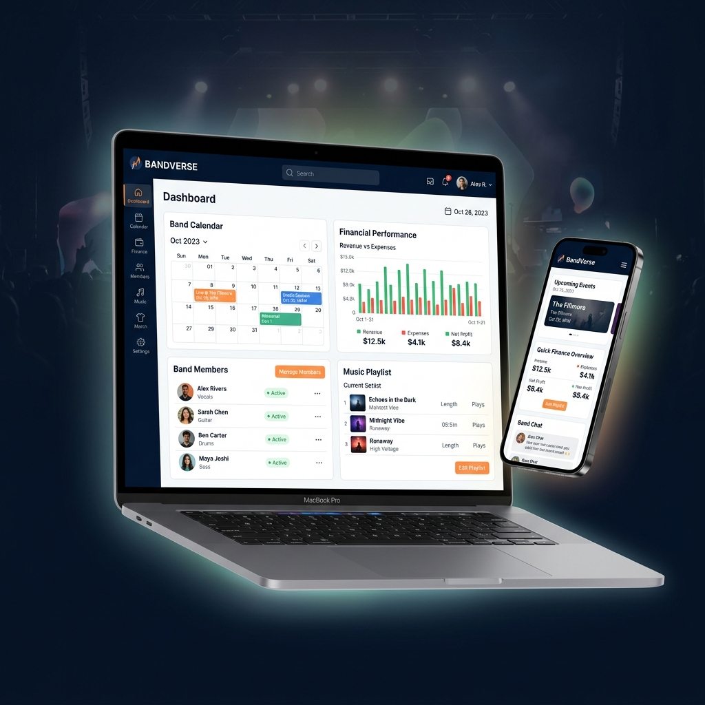

Organize sua banda.
Encontre novos talentos.
Faça música acontecer.
Gerencie agenda, finanças, repertório e conecte-se com músicos em um só lugar. Sem complicação, sem papelada.

Para sua Banda
Gerencie agenda, finanças, repertório e logística. Publique vagas para encontrar novos membros talentosos.
Gerenciar Minha BandaPara Você, Músico
Crie seu perfil profissional, envie vídeos de performance e encontre bandas que precisam do seu talento.
Criar Perfil de MúsicoUma plataforma completa para sua banda
Ferramentas poderosas, simples de usar. Foco no que importa: fazer música.
Agenda de Ensaios
Marque ensaios, defina repertórios e notifique todos os membros automaticamente.
Controle Financeiro
Registre cachês, despesas e lucros de forma transparente com gráficos visuais.
Gestão de Shows
Cadastre seus próximos shows, organize a logística e controle setlists.
Recrutamento
Publique vagas e receba perfis e vídeos de músicos talentosos da sua região.
Como o Music Makers funciona?
Em 3 passos simples, sua banda estará organizada.
Crie sua conta
Cadastre-se gratuitamente como gestor de banda ou músico independente.
Configure sua banda
Adicione membros, crie a agenda de ensaios e organize o repertório.
Gerencie tudo
Controle finanças, acompanhe shows e encontre novos talentos no mapa.